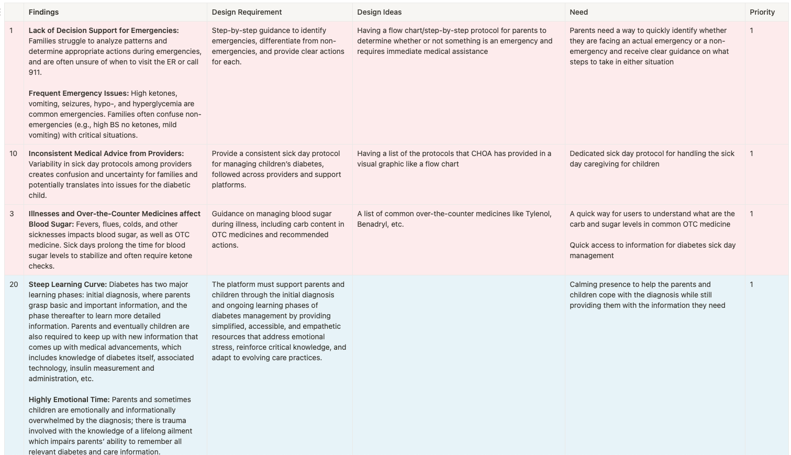

Findings:
|
Goal:Asking deeper questions to understand the challenges, process, and behavioral changes throughout diagnosis and managementRationale:To dive deeper and ask follow-up questions of the users learn more about the challenges, process, and behavioral changes through their diagnosis journey. Additionally, this could provide an opportunity to identify individuals interested in participating in the diary study.Research Questions:Context: |

|
Final Design Requirements |
Process of Taking Research Findings and Turning into Design Requirements |
|
Emergency Management |
|
Pulled key findings from our affinity map |
Education |
|
Created a table with the findings from the affinity map, created a user need, prioritized the user needs, and finnally wrote the requirements |
Calculators |
|

Grouped all of the design requirements into categories and added design ideas for the next phase of sketching |